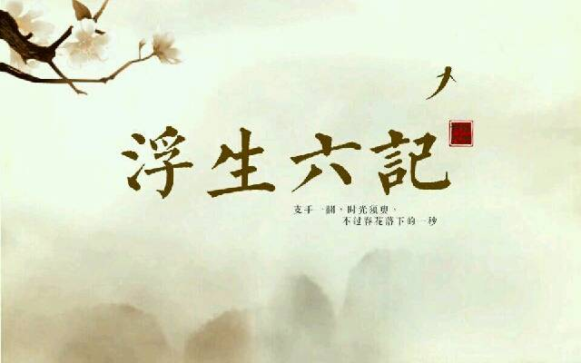
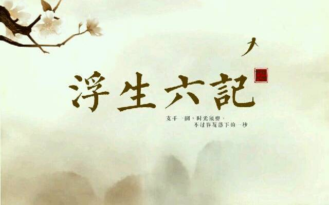

关于此网站
本网站致力于为每一个爱书人士推出能激励个人成长的好书！只有当一本书提供了精神成长、工作技能的提升，才会被我们所推荐！读书的益处:
1. 读书可以增加谈吐深度2.读书可以保持大脑的活跃
3.读书可以使人抵抗孤独
4.读书可以释放压力
5.读书使人明智
小组信息
学院：经贸学院班级：17电子商务B2班
小组：“高尔基”小组
作者简介：沈复（1763—1825），字三白，号梅逸，长洲（现在江苏苏州）人，清
代文学家。工诗画、散文。至今未发现有关他生平的文字记载。据其所著的《浮生六记》来看，他出身于幕僚家庭，没有参加过科举考试，曾以卖画维持生计。与妻子陈芸志趣投合，情感深厚，愿意过一种布衣素食而从事艺术的生活，但因封建礼教的压迫和贫苦生活的磨难，理想终未实现，经历了生离死别的惨痛。妻死后，他去四川充幕僚。此后情况不明。
《浮生六记》是清朝长洲人沈复（字三白，号梅逸）著于嘉庆十三年（1808年）的自传体散文。清朝王韬的妻兄杨引传在苏州的冷摊上发现《浮生六记》的残稿，只有四卷，交给当时在上海主持申报闻尊阁的王韬，以活字板刊行于1877年。“浮生”二字典出李白诗《春夜宴从弟桃李园序》中“夫天地者，万物之逆旅也；光阴者，百代之过客也。而浮生若梦，为欢几何？”。
《浮生六记》以作者夫妇生活为主线，赢余了平凡而又充满情趣的居家生活的浪游各地的所见所闻。作品描述了作者和妻子陈芸情投意合，想要过一种布衣蔬食而从事艺术的生活，由于封建礼教的压迫与贫困生活的煎熬，终至理想破灭。本书文字清新真率，无雕琢藻饰痕迹，情节则伉俪情深，至死不复；始于欢乐，终于忧患，漂零他乡，悲切动人。此外，本书还收录了清代名士冒襄悼念秦淮名妓董小宛的佳作《影梅庵忆语》。
《浮生六记》是一部水平极高影响颇大的自传体随笔，在清代笔记体文学中占有相当重要的位置。该书的特点在于真纯率真，独抒性灵，不拘格套，富有创造性。这种创造性，首先体现在其题材和描写对象上。在书中，作者以深情直率的笔调叙了夫妻闺房之乐，写出了夫妻间至诚至爱的真情。在中国文学史上，描写情爱的诗文很多，但大多或写宫廷艳史，或写权势礼法淫威下的爱情悲剧，或写风尘知己及少男少女之间的缠绵，很少涉及夫妻之情。别具慧眼的陈寅恪指出：“吾国文学，自来以礼法顾忌之故，不敢多言男女间关系，而于正式男女关系如夫妇者，尤少涉及。盖闺房燕昵之情意，家庭迷盐之琐屑，大抵不列于篇章，惟以笼统之词，概括言之而已。此后来沈三白《浮生六记》之《闺房记乐》，所以为例外创作。”
《浮生六记》以作者夫妇生活为主线，赢余了平凡而又充满情趣的居家生活的浪游各地的所见所闻。作品描述了作者和妻子陈芸情投意合，想要过一种布衣蔬食而从事艺术的生活，由于封建礼教的压迫与贫困生活的煎熬，终至理想破灭。本书文字清新真率，无雕琢藻饰痕迹，情节则伉俪情深，至死不复；始于欢乐，终于忧患，漂零他乡，悲切动人。此外，本书还收录了清代名士冒襄悼念秦淮名妓董小宛的佳作《影梅庵忆语》。
《浮生六记》是一部水平极高影响颇大的自传体随笔，在清代笔记体文学中占有相当重要的位置。该书的特点在于真纯率真，独抒性灵，不拘格套，富有创造性。这种创造性，首先体现在其题材和描写对象上。在书中，作者以深情直率的笔调叙了夫妻闺房之乐，写出了夫妻间至诚至爱的真情。在中国文学史上，描写情爱的诗文很多，但大多或写宫廷艳史，或写权势礼法淫威下的爱情悲剧，或写风尘知己及少男少女之间的缠绵，很少涉及夫妻之情。别具慧眼的陈寅恪指出：“吾国文学，自来以礼法顾忌之故，不敢多言男女间关系，而于正式男女关系如夫妇者，尤少涉及。盖闺房燕昵之情意，家庭迷盐之琐屑，大抵不列于篇章，惟以笼统之词，概括言之而已。此后来沈三白《浮生六记》之《闺房记乐》，所以为例外创作。”
关于书籍的格言
情之所钟，虽丑不嫌。“奉劝世间夫妇，固不可彼此相仇，亦不可过于情笃。语云：恩爱夫妻不到头。”